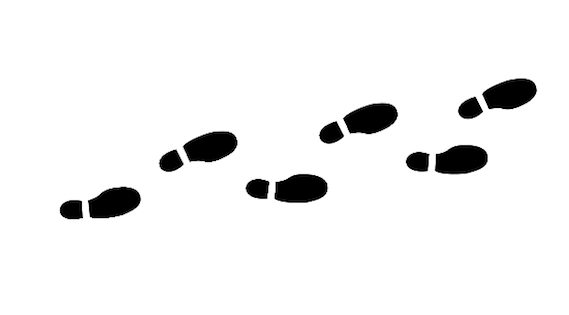

Pasapalabra botánico
En esta sección vamos a poner a prueba nuestros conocimientos acerca de las plantas con actividades creativas y divertidas. Las dos primeras son un concurso similar al famoso Pasapalabra de televisión. Opcionalmente seremos nosotros los que construyamos el "rosco" a partir del glosario que hemos elaborado a lo largo de la secuencia didáctica.
También descubriremos que podemos saber la edad de los árboles y más cosas a partir de sus troncos y pondremos a prueba nuestros conocimientos sobre el crecimiento de las plantas mediante un test.
¡Estas actividades nos esperan! ¿Estamos preparados?
Ahora en equipo. ¿Jugamos a Pasapalabra?
Actividad complementaria 1
Jugaremos toda la clase simultáneamente por equipos con un "rosco" ya creado que podemos proyectar a pantalla completa. En este caso hay cuatro letras para las que NO tenemos definición (K, Ñ, Q, W, ). Al llegar a ellas, el presentador dirá simplemente "SaltaPalabra" y leerá la siguiente definición.
Proyectar pasapalabra a pantalla completa.
1. Jugamos por equipos y el profesor hace de presentador del concurso.
2. Cada equipo debe tener preparadas dos hojas con el abecedario completo. En ellas debemos incluir el nombre de los alumnos, el curso y el nombre del equipo.
|
|
|

Se proyecta y se lee el mismo rosco para toda la clase, para conocer las reglas del juego, paso a paso, hacemos clic en la imagen:

{kind=link}
¡Que gane el mejor!
Obra publicada con Licencia Creative Commons Reconocimiento Compartir igual 4.0